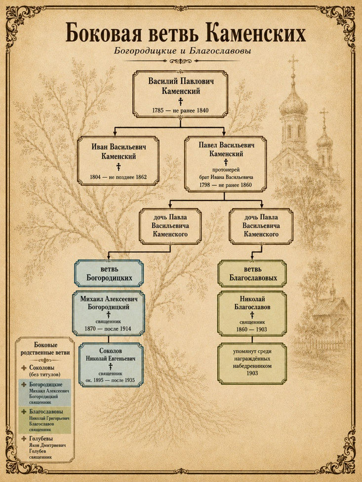
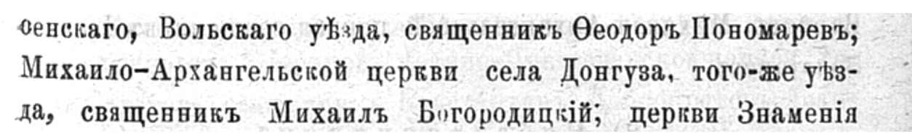

Глава VI
Боковая ветвь моего прапрадеда

Через боковую ветвь Каменских в родственную сеть моего рода входят семьи Богородицких и Благославовых. У моего прапрадеда Ивана Васильевича Каменского был родной брат — Павел Васильевич Каменский. Для меня он не прямой предок, а брат моего прапрадеда. Но именно через него видно, что Каменские были не одной узкой линией, а частью большой духовной среды Саратовской губернии. Павел Васильевич тоже принадлежал к духовному сословию. В документах он указан как протоиерей. Его дети породнили Каменских с другими священническими семьями: одна из дочерей вышла замуж за священника из семьи Богородицких, другая — за священника из семьи Благославовых.
Особенно важной фигурой здесь становится священник Михаил Алексеевич Богородицкий. Он был связан с Каменскими через Марию Павловну Каменскую, дочь Павла Васильевича. В «Саратовских епархиальных ведомостях» Михаил Богородицкий появляется как заметный представитель духовной среды Вольского уезда: в 1901 году он, священник Михайло-Архангельской церкви села Донгуза, был награждён скуфьёй, а в документах 1913–1914 годов связан уже с должностью благочинного 2-го округа Вольского уезда и упоминается среди депутатов епархиального съезда.
 |
 |
|---|
Но его судьба показывает и другое: как этот мир был сломан после революции. В 1929 году Михаила Богородицкого арестовали по обвинению в антисоветской агитации. Тогда дело было прекращено, и его освободили. В 1935 году его арестовали снова — уже по обвинению в контрреволюционной агитации — и осудили на восемь лет лишения свободы. Позднее, в 1992 году, он был реабилитирован посмертно.

Отдельного внимания заслуживает и ветвь Благославовых. Она вошла в родственную сеть Каменских через Екатерину Павловну Каменскую, дочь Павла Васильевича, которая вышла замуж за священника Николая Григорьевича Благославова. Николай Григорьевич родился 26 ноября 1870 года и принадлежал к духовной семье. Его отец, Григорий Тимофеевич Благославов, был священником, а дед по отцовской линии, Тимофей Ульянович Благославов, указан в документах как пономарь. В следующем поколении среди Благославовых также были люди духовного звания: Алексей Григорьевич и Василий Григорьевич указаны как диаконы.
Когда я смотрю на судьбу Михаила Богородицкого, я вижу в ней перекличку с судьбой моего дяди — Валентина Сергеевича Каменского. Это не прямое повторение одной биографии. Михаил Богородицкий был священником старого мира, родственником по боковой ветви. Валентин Сергеевич был уже человеком советского поколения: родился в 1936 году, жил в Энгельсе, работал слесарем на заводе автотракторных зажигательных свечей. Но их судьбы соединяет один страшный мотив: слово, признанное властью опасным. У Богородицкого — обвинения в антисоветской и контрреволюционной агитации. У Валентина — статья 58-10, антисоветская агитация. 29 октября 1958 года Валентин Сергеевич был арестован, а 13 января 1959 года Саратовский областной суд приговорил его к семи годам исправительно-трудовых лагерей. Ему было чуть больше двадцати.
И здесь я начинаю лучше понимать, что семейное молчание появилось не на пустом месте. За ним стояли реальные аресты, допросы, сроки, страх, лагеря и поздние реабилитации. Боковая ветвь Богородицких показывает ранний удар по духовному миру. История Валентина Каменского показывает, что этот страх дожил до следующего поколения и вошёл уже в мою прямую семейную линию. Валентин Сергеевич выжил, отбыл срок и вернулся в Энгельс. 24 апреля 1992 года он был реабилитирован. Но реабилитация не возвращает годы. Не отменяет страх. Не восстанавливает разрушенные разговоры. Поэтому Михаил Богородицкий остаётся в этой книге не как главный герой моего рода, а как важное свидетельство того, что советский разлом прошёл не через одного человека. Он ударил по целой родовой среде. А Валентин Сергеевич для меня — ключ к пониманию семейной тишины.
Почему о многом не говорили. Почему имена исчезали. Почему фотографии терялись. Почему происхождение становилось не гордостью, а опасностью.
Иногда именно боковая ветвь помогает понять, насколько большим было всё дерево.